ggplot(chic,
aes(x = date, y = temp, color = season)) +
geom_point() +
labs(x = "Year", y = "Temperature (°F)")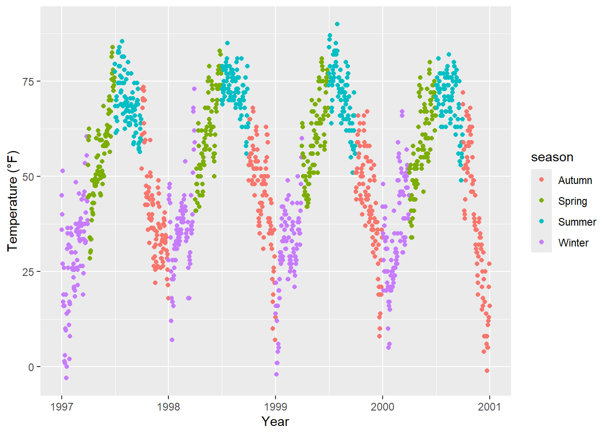
In this section, we will color code the plot based on the season. Or, to phrase it more in the style of ggplot: we’ll map the variable season to the aesthetic color. One of the advantages of {ggplot2} is that it automatically adds a legend when mapping a variable to an aesthetic. As a result, the legend title defaults to what we specified in the color argument:
ggplot(chic,
aes(x = date, y = temp, color = season)) +
geom_point() +
labs(x = "Year", y = "Temperature (°F)")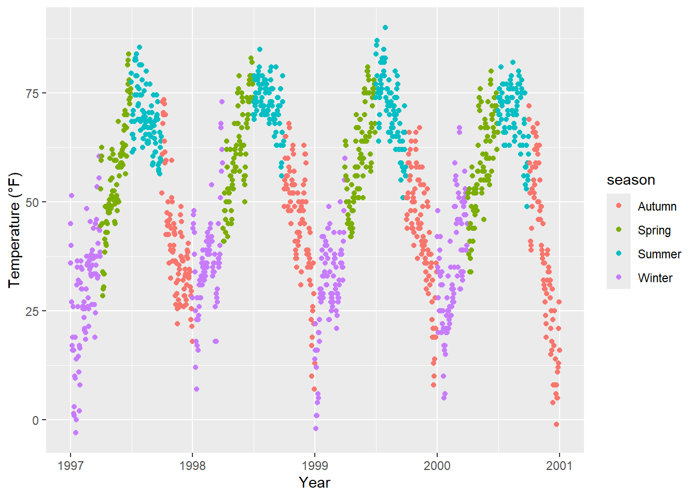
One of the most common questions is: “How do I remove the legend?”
It’s quite straightforward and always effective with theme(legend.position = "none"):
ggplot(chic,
aes(x = date, y = temp, color = season)) +
geom_point() +
labs(x = "Year", y = "Temperature (°F)") +
theme(legend.position = "none")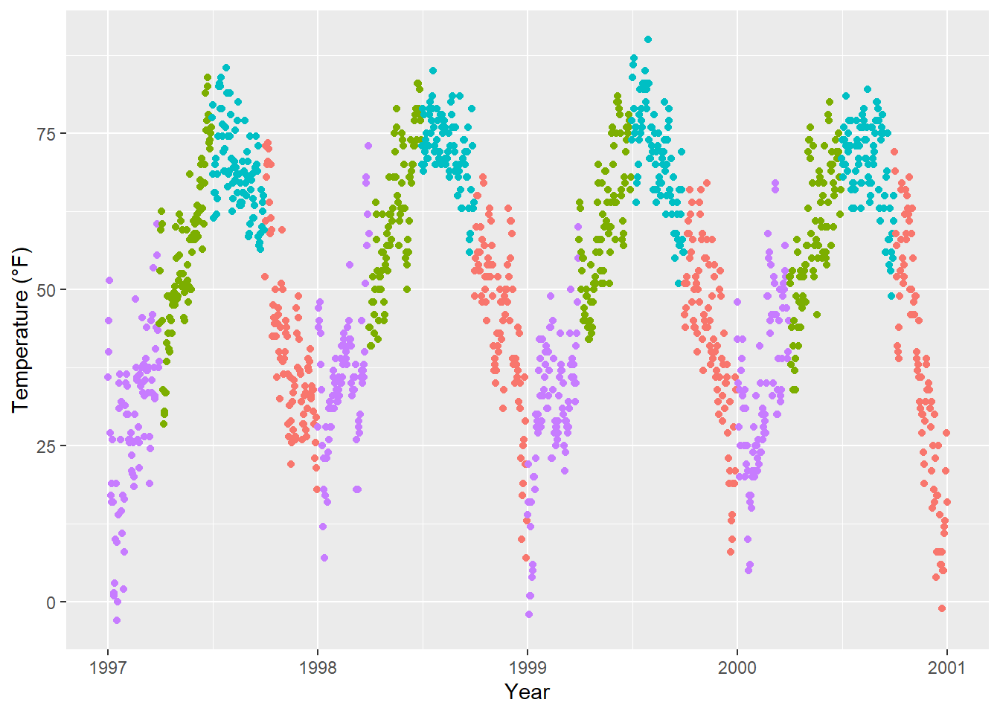
You can also utilize guides(color = "none") or scale_color_discrete(guide = "none"), depending on the specific case. While altering the theme element removes all legends at once, you can selectively remove specific legends using the latter options while keeping others:
ggplot(chic,
aes(x = date, y = temp,
color = season, shape = season)) +
geom_point() +
labs(x = "Year", y = "Temperature (°F)") +
guides(color = "none")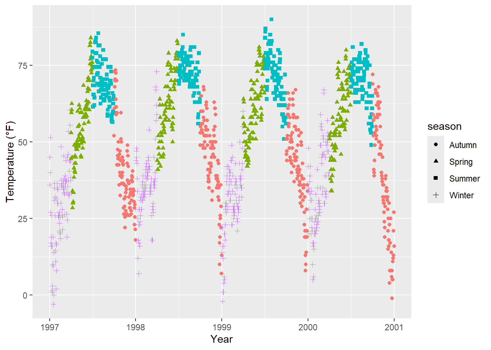
Here, for example, we retain the legend for the shapes while discarding the one for the colors.
As we’ve previously learned, utilize element_blank() to render nothing:
ggplot(chic, aes(x = date, y = temp, color = season)) +
geom_point() +
labs(x = "Year", y = "Temperature (°F)") +
theme(legend.title = element_blank())
You can achieve the same outcome by setting the legend name to NULL, either through scale_color_discrete(name = NULL) or labs(color = NULL). Expand to see examples.
ggplot(chic, aes(x = date, y = temp, color = season)) +
geom_point() +
labs(x = "Year", y = "Temperature (°F)") +
scale_color_discrete(name = NULL)
ggplot(chic, aes(x = date, y = temp, color = season)) +
geom_point() +
labs(x = "Year", y = "Temperature (°F)") +
labs(color = NULL)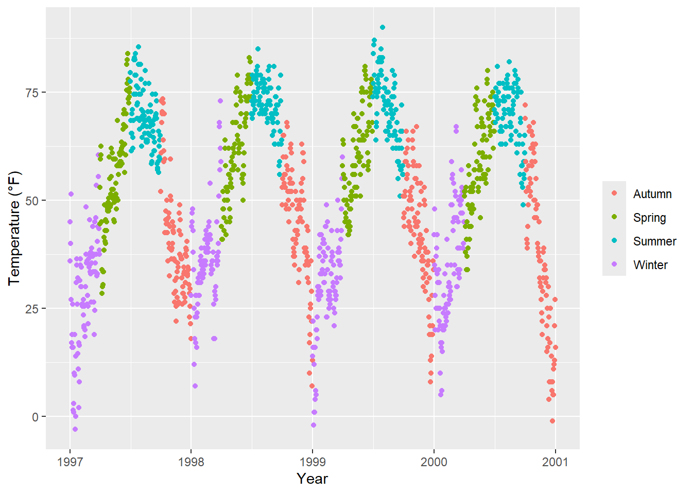
To relocate the legend from its default position on the right side, you can use the legend.position argument within theme. Available positions include “top”, “right” (the default), “bottom”, and “left”.
ggplot(chic, aes(x = date, y = temp, color = season)) +
geom_point() +
labs(x = "Year", y = "Temperature (°F)") +
theme(legend.position = "top")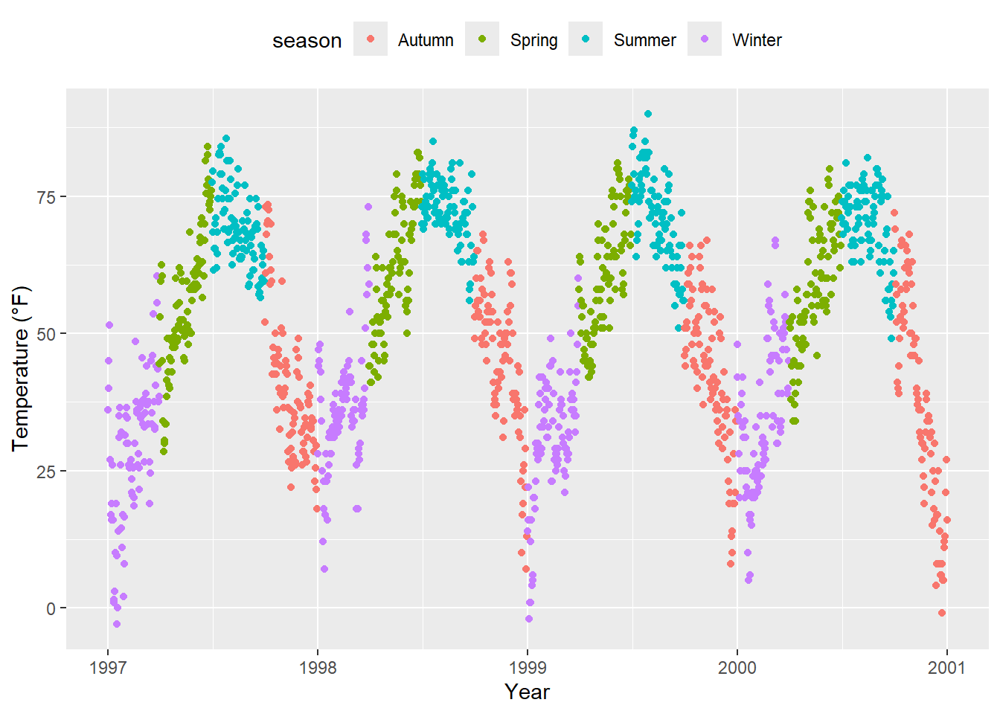
You can also position the legend inside the panel by specifying a vector with relative x and y coordinates ranging from 0 (left or bottom) to 1 (right or top):
ggplot(chic, aes(x = date, y = temp, color = season)) +
geom_point() +
labs(x = "Year", y = "Temperature (°F)",
color = NULL) +
theme(legend.position = c(.15, .15),
legend.background = element_rect(fill = "transparent"))Warning: A numeric `legend.position` argument in `theme()` was deprecated in ggplot2
3.5.0.
ℹ Please use the `legend.position.inside` argument of `theme()` instead.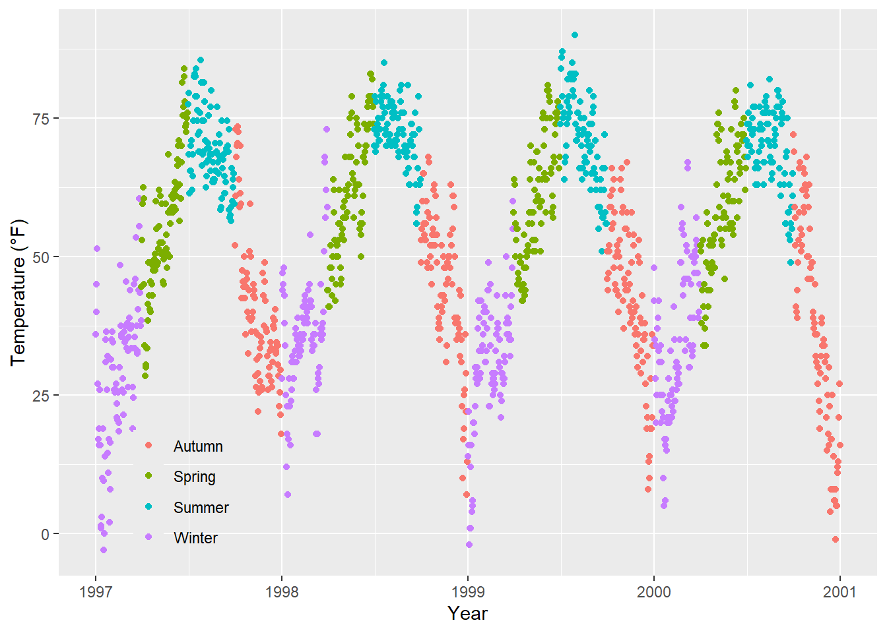
Here, I also override the default white legend background with a transparent fill to ensure the legend doesn’t obscure any data points.
By default, the legend direction is vertical. However, when you select either the “top” or “bottom” position, it becomes horizontal. Nevertheless, you can freely switch the direction as desired:
ggplot(chic, aes(x = date, y = temp, color = season)) +
geom_point() +
labs(x = "Year", y = "Temperature (°F)") +
theme(legend.position = c(.5, .97),
legend.background = element_rect(fill = "transparent")) +
guides(color = guide_legend(direction = "horizontal"))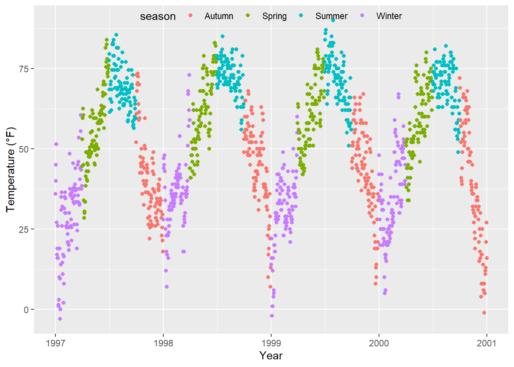
You can customize the appearance of the legend title by adjusting the theme element legend.title:
ggplot(chic, aes(x = date, y = temp, color = season)) +
geom_point() +
labs(x = "Year", y = "Temperature (°F)") +
theme(legend.title = element_text(family = "Playfair Display",
color = "chocolate",
size = 14, face = "bold"))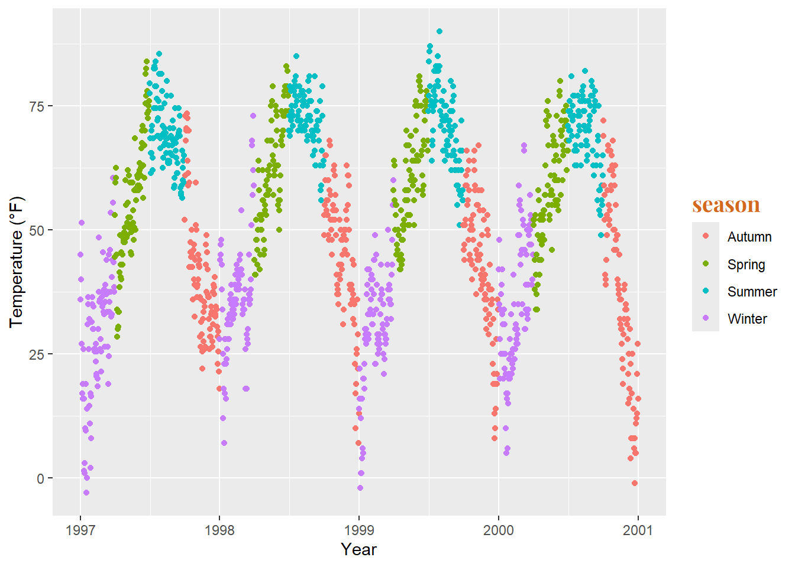
The simplest method to change the title of the legend is through the labs() layer:
ggplot(chic, aes(x = date, y = temp, color = season)) +
geom_point() +
labs(x = "Year", y = "Temperature (°F)",
color = "Seasons\nindicated\nby colors:") +
theme(legend.title = element_text(family = "Playfair Display",
color = "chocolate",
size = 14, face = "bold"))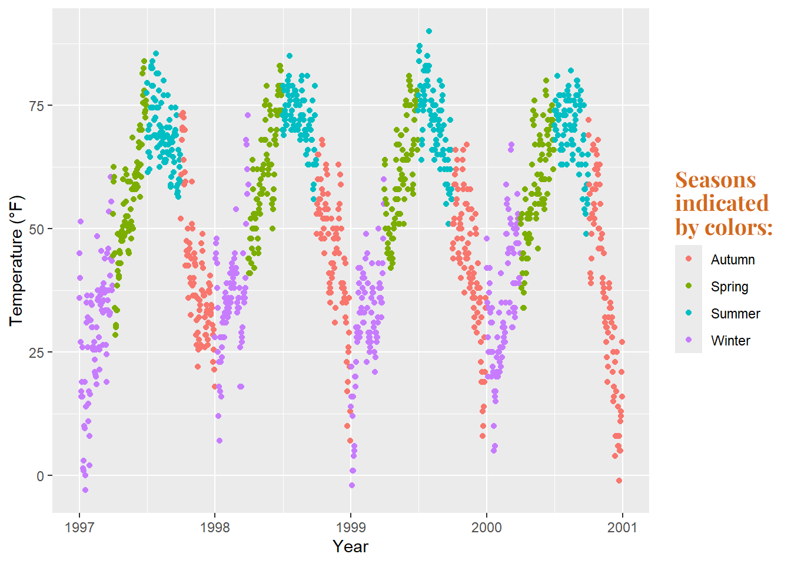
You can adjust the legend details using scale_color_discrete(name = "title") or guides(color = guide_legend("title")):
ggplot(chic, aes(x = date, y = temp, color = season)) +
geom_point() +
labs(x = "Year", y = "Temperature (°F)") +
theme(legend.title = element_text(family = "Playfair Display",
color = "chocolate",
size = 14, face = "bold")) +
scale_color_discrete(name = "Seasons\nindicated\nby colors:")This can be accomplished by changing the levels of season:
chic$season <-
factor(chic$season,
levels = c("Winter", "Spring", "Summer", "Autumn"))
ggplot(chic, aes(x = date, y = temp, color = season)) +
geom_point() +
labs(x = "Year", y = "Temperature (°F)")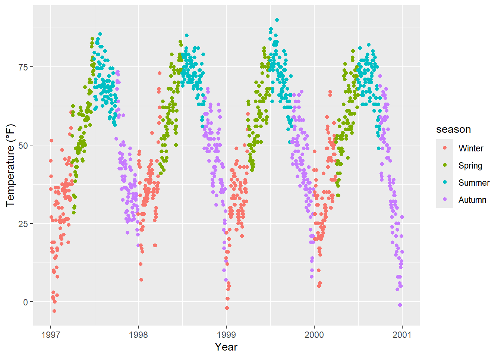
To replace the seasons with the months they represent, provide a vector of names in the scale_color_discrete() call:
ggplot(chic, aes(x = date, y = temp, color = season)) +
geom_point() +
labs(x = "Year", y = "Temperature (°F)") +
scale_color_discrete(
name = "Seasons:",
labels = c("Mar—May", "Jun—Aug", "Sep—Nov", "Dec—Feb")
) +
theme(legend.title = element_text(
family = "Playfair Display", color = "chocolate", size = 14, face = 2
))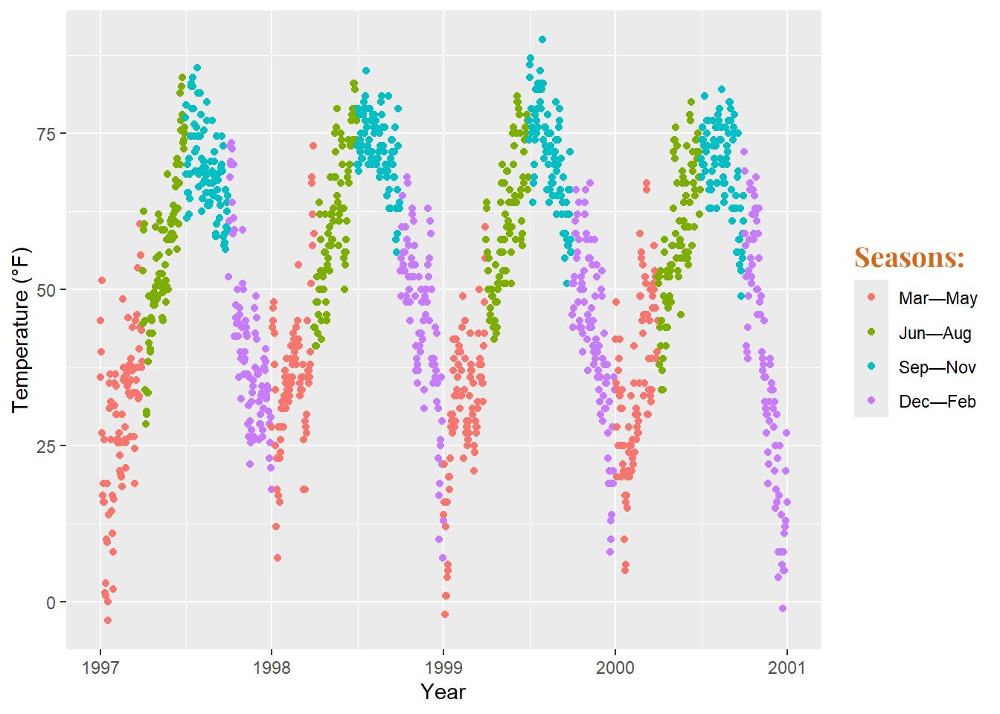
To alter the background color (fill) of the legend keys, we modify the setting for the theme element legend.key:
ggplot(chic, aes(x = date, y = temp, color = season)) +
geom_point() +
labs(x = "Year", y = "Temperature (°F)") +
theme(legend.key = element_rect(fill = "darkgoldenrod1"),
legend.title = element_text(family = "Playfair Display",
color = "chocolate",
size = 14, face = 2)) +
scale_color_discrete("Seasons:")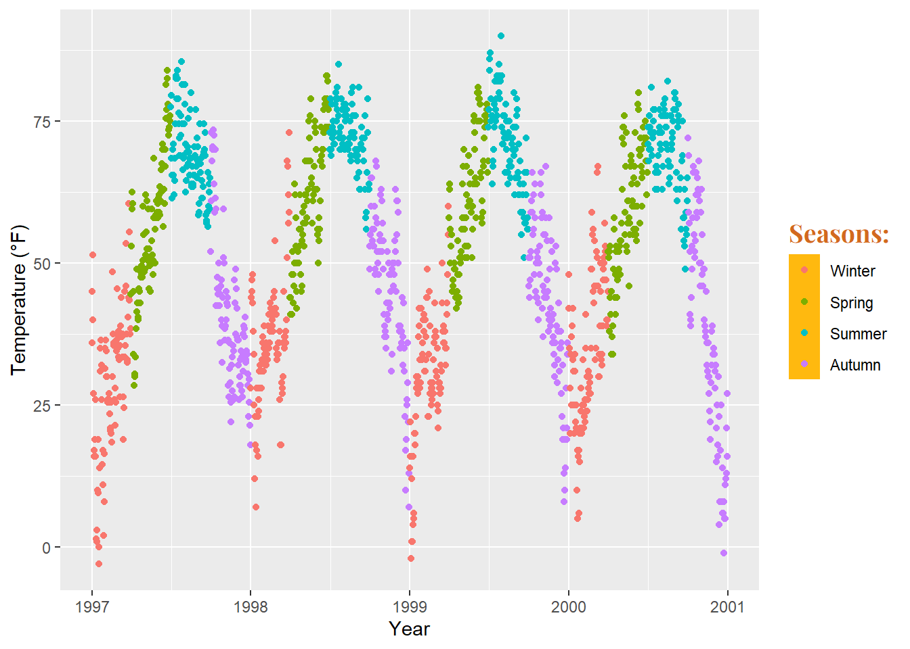
If you wish to remove them entirely, use fill = NA or fill = "transparent".
The default size of points in the legend may cause them to appear too small, especially without boxes. To modify this, you can again use the guides layer as follows:
ggplot(chic, aes(x = date, y = temp, color = season)) +
geom_point() +
labs(x = "Year", y = "Temperature (°F)") +
theme(legend.key = element_rect(fill = NA),
legend.title = element_text(color = "chocolate",
size = 14, face = 2)) +
scale_color_discrete("Seasons:") +
guides(color = guide_legend(override.aes = list(size = 6)))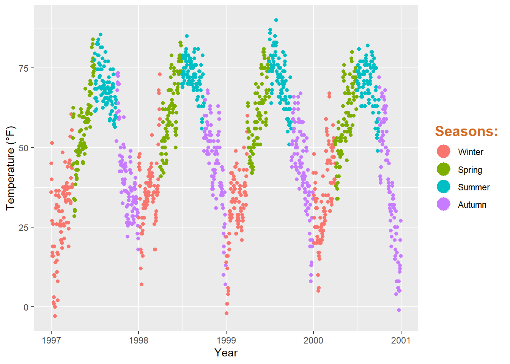
Suppose you have two different geometric layers mapped to the same variable, such as color being used as an aesthetic for both a point layer and a rug layer of the same data. By default, both the points and the “line” end up in the legend like this:
ggplot(chic, aes(x = date, y = temp, color = season)) +
geom_point() +
labs(x = "Year", y = "Temperature (°F)") +
geom_rug()You can utilize show.legend = FALSE to exclude a layer from the legend:
ggplot(chic, aes(x = date, y = temp, color = season)) +
geom_point() +
labs(x = "Year", y = "Temperature (°F)") +
geom_rug(show.legend = FALSE)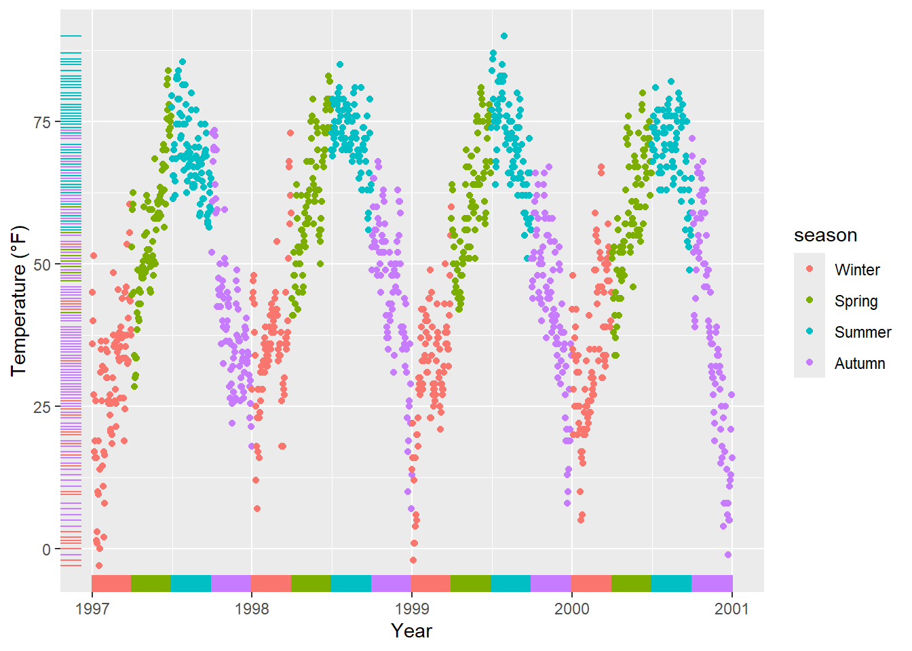
By default, {ggplot2} won’t add a legend unless you map aesthetics (color, size, etc.) to a variable. However, there are occasions where you may want to include a legend for clarity.
Here’s the default behavior:
ggplot(chic, aes(x = date, y = o3)) +
geom_line(color = "gray") +
geom_point(color = "darkorange2") +
labs(x = "Year", y = "Ozone")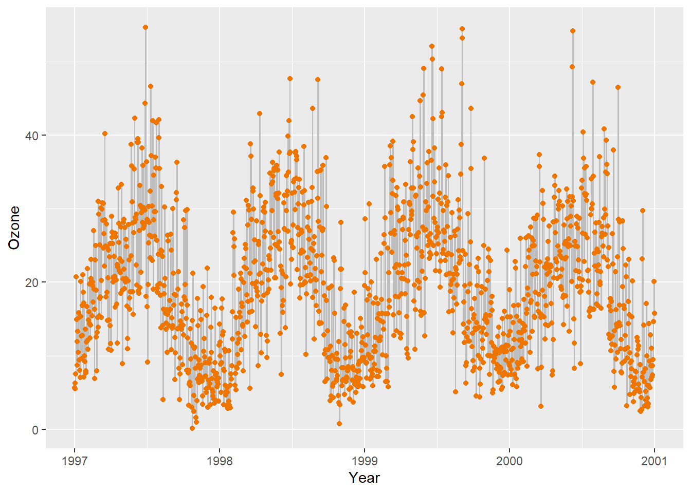
To force a legend, we can map a guide to a variable. Here, we’re mapping the lines and the points using aes(), but we’re not mapping to a variable in our dataset. Instead, we’re using a single string for each, ensuring we get just one color for each.
ggplot(chic, aes(x = date, y = o3)) +
geom_line(aes(color = "line")) +
geom_point(aes(color = "points")) +
labs(x = "Year", y = "Ozone") +
scale_color_discrete("Type:")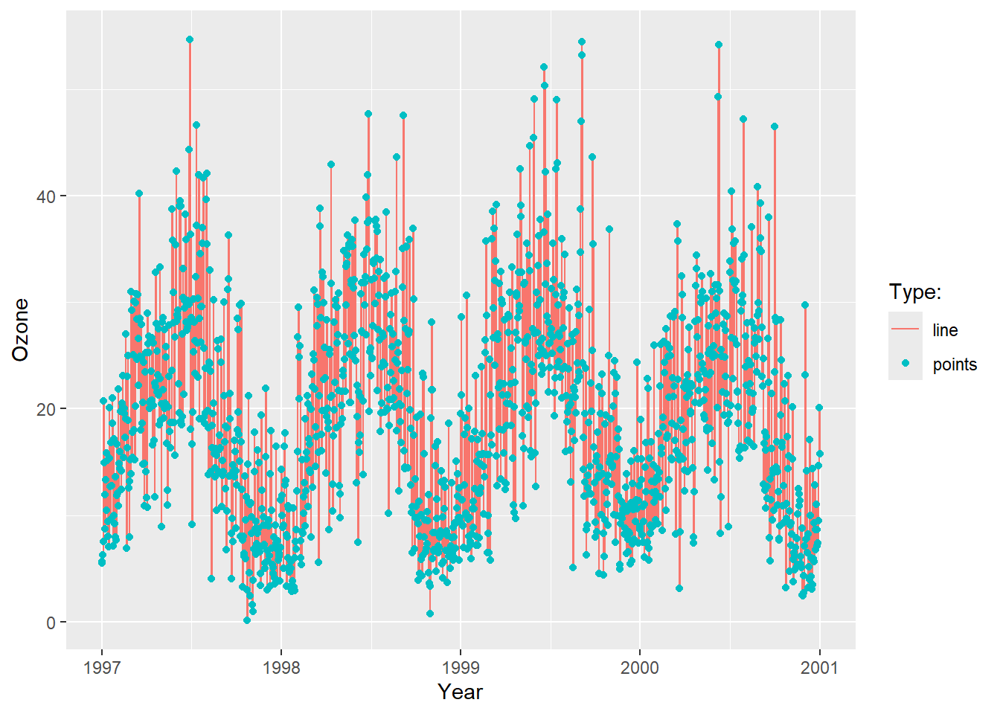
We’re getting close, but this is not what we want. We desire gray lines and red points. To change the colors, we use scale_color_manual(). Additionally, we override the legend aesthetics using the guide() function.
Now, we have a plot with gray lines and red points, as well as a single gray line and a single red point as legend symbols.
ggplot(chic, aes(x = date, y = o3)) +
geom_line(aes(color = "line")) +
geom_point(aes(color = "points")) +
labs(x = "Year", y = "Ozone") +
scale_color_manual(name = NULL,
guide = "legend",
values = c("points" = "darkorange2",
"line" = "gray")) +
guides(color = guide_legend(override.aes = list(linetype = c(1, 0),
shape = c(NA, 16))))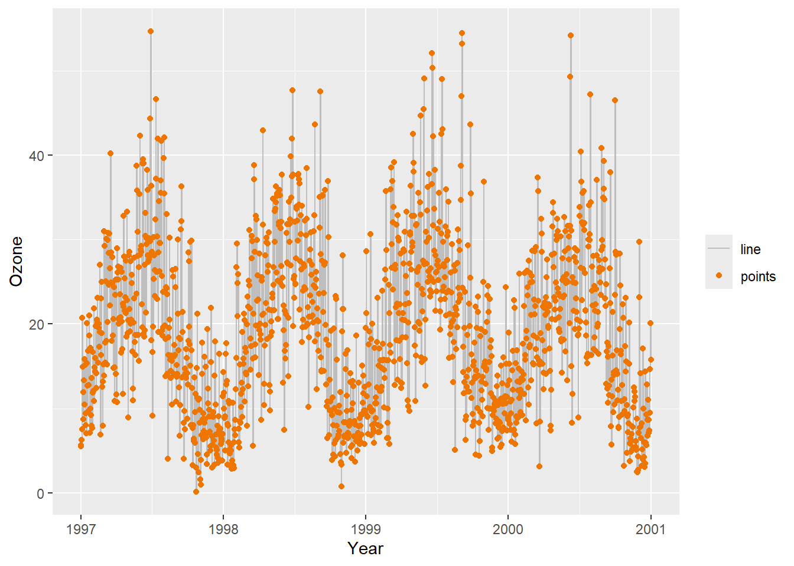
The default legend for categorical variables such as season is a guide_legend(), as you have seen in several previous examples. However, if you map a continuous variable to an aesthetic, {ggplot2} will by default not use guide_legend() but guide_colorbar() (or guide_colourbar()).
ggplot(chic,
aes(x = date, y = temp, color = temp)) +
geom_point() +
labs(x = "Year", y = "Temperature (°F)", color = "Temperature (°F)")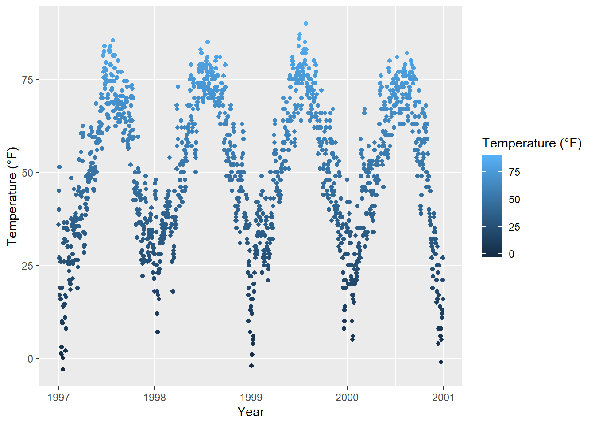
However, by using guide_legend(), you can force the legend to display discrete colors for a given number of breaks as in the case of a categorical variable:
ggplot(chic,
aes(x = date, y = temp, color = temp)) +
geom_point() +
labs(x = "Year", y = "Temperature (°F)", color = "Temperature (°F)") +
guides(color = guide_legend())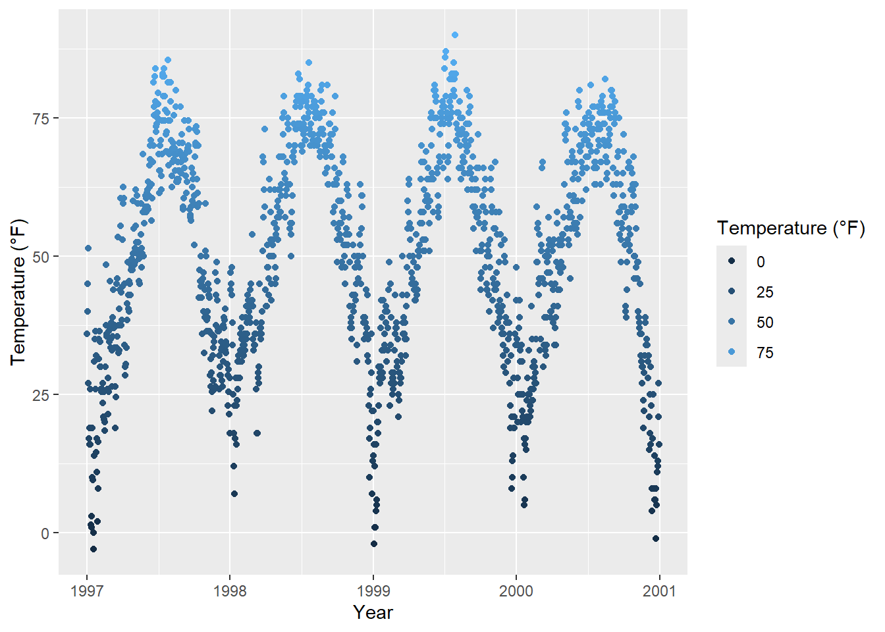
You can also utilize binned scales:
ggplot(chic,
aes(x = date, y = temp, color = temp)) +
geom_point() +
labs(x = "Year", y = "Temperature (°F)", color = "Temperature (°F)") +
guides(color = guide_bins())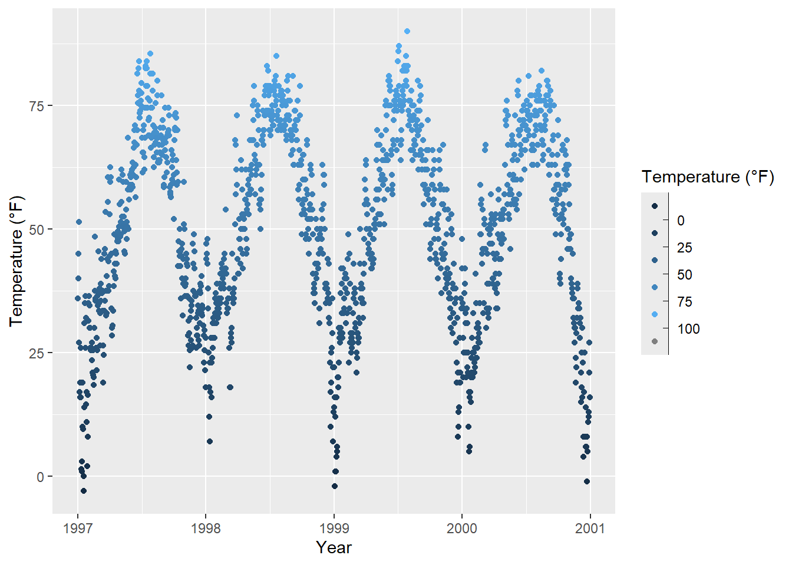
… or binned scales as discrete colorbars:
ggplot(chic,
aes(x = date, y = temp, color = temp)) +
geom_point() +
labs(x = "Year", y = "Temperature (°F)", color = "Temperature (°F)") +
guides(color = guide_colorsteps())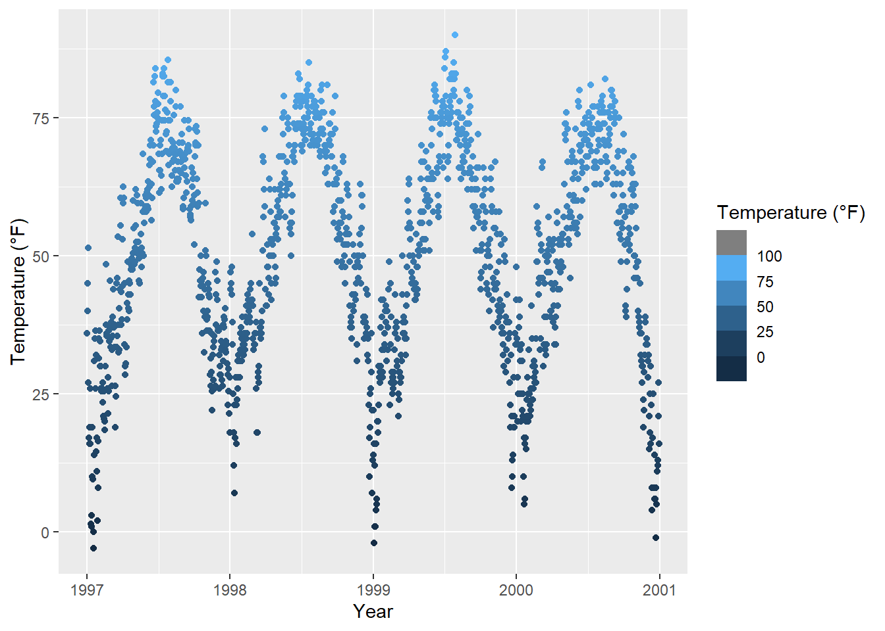